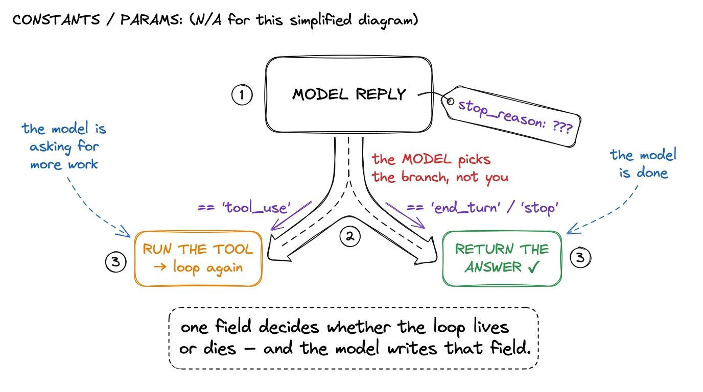
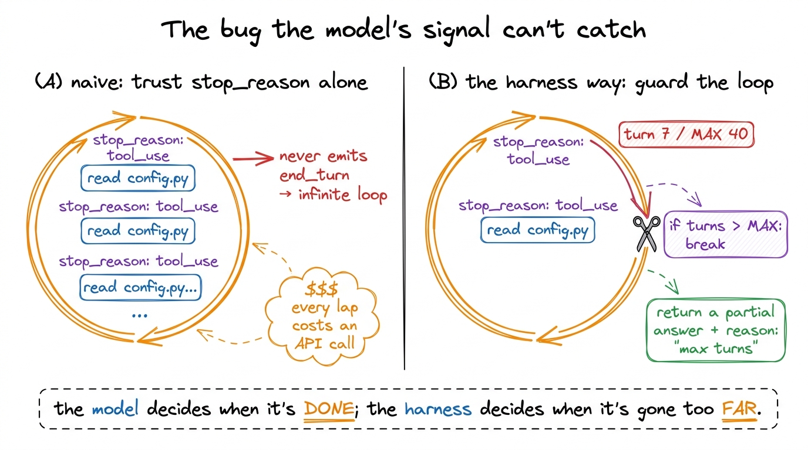
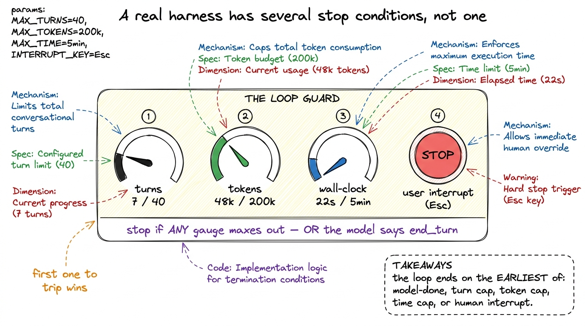
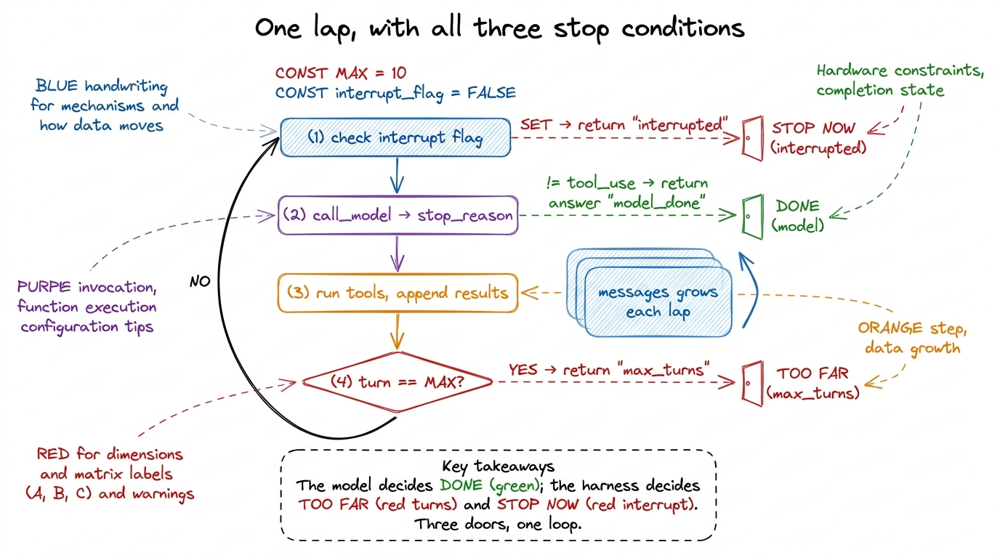

Stop conditions: when does the loop end?
In your first bare harness the loop ended with one quiet little line: if reply.stop_reason != "tool_use": return. Fifteen lines of code, and this was the one I told you to stare at. Now we stare at it properly, because that single condition is where the loop hands the model something no script ever gives its own subroutine: the authority to declare itself finished. Get it right and the agent feels alive. Get it wrong and you get a machine that reads the same file forever, or one that quits three moves before the job is actually done, or one that runs up a hundred-dollar API bill while you are at lunch.
Let me build the answer up the honest way — start with the model's own signal, discover why it is not enough on its own, and add the two guards every real harness wraps around it.
The model's own signal: stop_reason
Every chat-style API returns, alongside the generated content, a small field that says why the model stopped generating. On the Anthropic API it is stop_reason; on the OpenAI shape it is finish_reason. The names differ, the idea is identical: the model tells you which of a few situations it just hit.1 The exact string values vary by provider — Anthropic uses end_turn / tool_use / max_tokens / stop_sequence, OpenAI uses stop / tool_calls / length. Your model client should normalize these into one internal vocabulary so the loop never has to care which lab you rented the brain from.
The two values that drive the loop are the two that matter here. tool_use means "I want to call a tool — run it and come back to me." Anything else — end_turn, stop, a stop sequence — means "I have nothing more to ask for; here is my answer." That is the whole native stopping mechanism. The loop continues precisely as long as the model keeps saying tool_use, and returns the instant it says anything else.

figure rendering · Every reply carries a stop_reason. tool_use means keep looping; anythiSit with the strangeness of that. In an ordinary program, the code decides when a loop terminates — a counter hits a bound, a queue drains, a flag flips. Here the termination condition is a value produced by the thing inside the loop, on the fly, in natural language reasoning we cannot fully inspect. We have handed control of our own while loop to a probabilistic text generator. This is the famous inversion of control that makes an agent an agent, and it is genuinely powerful: the model can decide it needs one more tool call, or five, or none, based on what it discovered mid-task — flexibility no fixed script could match.
It is also, for exactly the same reason, dangerous.
Why the model's word is not enough
If the model always knew when it was done, stop_reason alone would be the entire chapter. It does not always know. Because the stop condition is generated, it is subject to every failure mode generation has, and in a loop those failures compound instead of cancelling out.
The nastiest one is the loop that never says end_turn. The model asks to read config.py, gets the contents, and — for reasons opaque to us — decides it should read config.py again. And again. Each lap it emits tool_use, so the harness dutifully continues; the model's own signal never once says stop. Nothing in our fifteen-line loop can break this, because we delegated the entire stopping decision to a model that is, right now, stuck.

figure rendering · Trusting stop_reason alone lets a stuck model loop forever, burning toThere are quieter failures too. A model can stop too early — emit end_turn with a confident summary while the tests it promised to run are still red, because it believes it finished. It can get trapped in a two-step ping-pong, editing a file then reverting it then editing it again, each step a legitimate tool_use. And on a genuinely long task it can simply run past your token budget or your patience. None of these are exotic; every one of them has shipped as a real bug in a real agent.2 This is the loop-side twin of a context problem: a model re-reading the same file forever is often a model that has lost the earlier read from its context window. The durable fix lives in compaction and summarization and memory; the safety net below is what stops the bleeding in the meantime.
The lesson is not "the model's signal is useless" — it is the primary, correct stop condition ninety-nine laps out of a hundred. The lesson is that you cannot let it be the only one. A loop whose sole exit is controlled by the thing inside the loop has no floor. So we add a floor.
Guard one: the max-turns ceiling
The first guard is embarrassingly simple and completely non-negotiable: count the laps, and refuse to take more than some maximum. It is the loop's seatbelt.
def run_agent(user_request, max_turns=40):
messages = [{"role": "user", "content": user_request}]
for turn in range(max_turns): # hard ceiling on laps
reply = call_model(messages, TOOLS)
messages.append({"role": "assistant", "content": reply.content})
if reply.stop_reason != "tool_use": # model says it's done
return {"answer": text_of(reply), "reason": "model_done"}
tool_results = run_all_tools(reply)
messages.append({"role": "user", "content": tool_results})
# fell out of the for-loop: the model never stopped on its own
return {"answer": text_of(reply), "reason": "max_turns_exceeded"}The only change from the bare loop is turning while True into for turn in range(max_turns) and returning a labelled result when we fall off the end. Two things about it are worth more than the one line of code suggests.
First, the return reason matters as much as the return value. When you hit the ceiling you have not solved the task — you have aborted it. Bubbling up reason: "max_turns_exceeded" (rather than pretending the last message was a real answer) lets the caller, a supervisor, or the user know the agent was cut off, and decide whether to raise the ceiling and resume or to intervene.3 In orchestration a sub-agent that hits its turn ceiling reports back to its supervisor, which can grant more turns, re-scope the task, or escalate to a human. The turn counter is not just a kill switch — it is a signal in a larger control system. A silent truncation dressed up as an answer is worse than a loud failure.
Second, the number is a policy, not a constant. Forty is a reasonable default for an interactive coding turn; a big autonomous refactor might warrant hundreds, a cheap one-shot query maybe five. Real harnesses make this configurable and often pair the turn count with a parallel budget on total tokens or wall-clock time, because a run can be within its lap limit while still burning far more money or minutes than you intended. Whichever bound trips first ends the loop.

figure rendering · Production loops stop on whichever bound trips first: the model's ownGuard two: the interrupt path
The ceiling protects you from the model running too long. The interrupt protects you from the model running at all when you have changed your mind. You are watching Claude Code start down a wrong path — it is about to edit the wrong file, or you just realized your request was incomplete — and you hit Esc. The agent should stop now, not after it finishes the tool it was midway through and not at the top of the next lap only if it happens to check.
This means the loop needs a cancellation signal it consults at its natural checkpoints. The simplest version is a flag the loop reads between laps and before dispatching each tool:
def run_agent(user_request, cancel_event, max_turns=40):
messages = [{"role": "user", "content": user_request}]
for turn in range(max_turns):
if cancel_event.is_set(): # checkpoint: before the model call
return {"answer": None, "reason": "interrupted"}
reply = call_model(messages, TOOLS)
messages.append({"role": "assistant", "content": reply.content})
if reply.stop_reason != "tool_use":
return {"answer": text_of(reply), "reason": "model_done"}
tool_results = []
for block in reply.content:
if block.type == "tool_use":
if cancel_event.is_set(): # checkpoint: before each tool runs
return {"answer": None, "reason": "interrupted"}
tool_results.append(run_one_tool(block))
messages.append({"role": "user", "content": tool_results})The important design point is where you place the checks. Cancellation is cooperative: the loop can only honor it at a point where it looks. You want those points dense enough that Esc feels instant — before the expensive model call, and before each tool dispatch — but you cannot preempt in the middle of a running run_bash without harder machinery (killing the subprocess, cancelling the in-flight HTTP request). Real harnesses do go that far — Claude Code's Esc can interrupt a streaming response and a running command — but the skeleton is exactly this: a shared signal the loop agrees to consult.4 A clean interrupt should also leave the message array in a coherent state — if you cancel after the model asked for three tools but before you ran them, you owe the conversation a tool_result for each pending call (even an "interrupted by user" placeholder), or the next turn will reject a malformed history. Half-finished tool calls are a real source of "why did my agent's next message error" bugs.
Notice that interruption, unlike the turn ceiling, produces no answer at all — answer: None, reason: "interrupted". That is honest. The user stopped the agent precisely because they did not want its current answer; manufacturing one would defy the whole point of the button.
The three conditions, together
Step back and the exit logic of any serious loop is a small committee, checked every lap, and the loop ends on whichever member speaks first.

figure rendering · The mature loop checks three exits every lap: a user interrupt, the mo- The model's
stop_reasonis the primary, intended exit. It is what makes the agent flexible, and it is right the overwhelming majority of the time. You keep it front and center. - The turn/budget ceiling is the safety exit — the floor under the model's judgment, there for the lap where the model's judgment fails. It should rarely fire; when it does, that is a signal something went wrong, not business as usual.
- The interrupt is the human exit — the acknowledgment that the person watching always outranks the model, and can end the run for reasons the model cannot know.
Each returns a distinct, labelled reason, because in every layer above this one — durability, orchestration, the UI — why the loop ended changes what happens next. A model_done gets its answer shown. A max_turns_exceeded might get resumed with a higher ceiling. An interrupted waits for the human's next instruction.
What this buys you, and what it still misses
With these three conditions your loop is no longer at the mercy of a single generated field. It still gives the model the authority to declare itself finished — that authority is the point of an agent — but it now has a floor it cannot fall through and a brake the human can always reach. That is the difference between a loop you would run unattended and one you would only ever babysit.
What it still misses is everything that happens after an abnormal stop. A max_turns_exceeded or an interrupted leaves a half-finished conversation on your hands — and if the process itself dies mid-lap, even a clean stop condition can't help you, because there is no loop left to report a reason. Recovering that state instead of throwing it away is a whole layer of its own: we make every step replayable in durable execution and checkpointing, so a loop that stopped — for any of these reasons, or none — can pick up exactly where it left off. First, though, we give the agent the hands it has been asking for, safely: tool schemas as contracts.